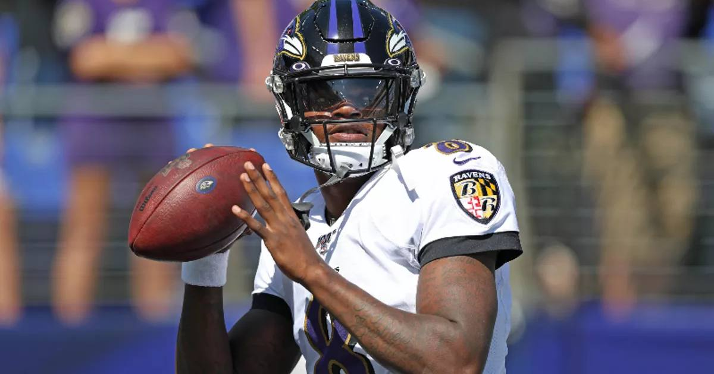

Lamar Jackson Plans to Return Sunday Against Buffalo
Lamar Jackson plans to return Sunday against Buffalo after three games out, having completed a full week of practice with his ankle pain bearable enough to play.

Disclosure: this post contains affiliate links. I earn a commission on qualifying purchases.
Lamar Jackson plans to return Sunday against Buffalo, ending a three-game absence. The plan comes after a full week of practice — and Jackson's own assessment that the pain in his ankle is bearable enough to play.
What we know
Player: Lamar Jackson
Absence: Three games out
Practice: Full week of practice completed
Ankle: Still feels pain, but called it bearable enough to play
Return game: Sunday against Buffalo
Why it matters
Three games is a long time to be without a starting quarterback, and the timing here is what stands out: Jackson didn't just get through a practice or two — he completed a full week of them. That, plus his own read that the ankle pain is manageable, is what has him planning to be back on Sunday rather than sitting out a fourth game.
The word to watch is "plans." This is a return plan, not a guarantee — but a full practice week and a quarterback who says he can play through it is about as encouraging a setup as a return gets.
Watch
Source: "Ravens vs. Bills Preview: Lamar Jackson Returns! Can Baltimore Bounce Back? | NFL Week 8" from Urban Sports Scene — a Ravens–Bills preview centered on Jackson's return and what it means for Baltimore's bounce-back chances.
Gear up: Fanatics